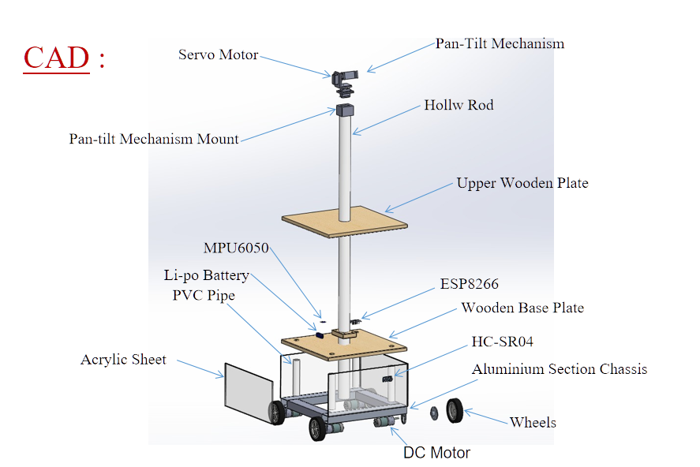

PROJECT MEDIACompleted Robotics Project
Telepresence Robot
Built a telepresence mobile robot covering mapping, localization, navigation, low-level motion control and a Gazebo digital twin.
Engineering Challenge
The project combined mobile-base hardware, sensing and ROS navigation. The main engineering challenge was getting mapping, localization and motion control to behave coherently across simulation and the physical robot.
Implementation
Used LiDAR-based GMapping to create occupancy-grid maps, AMCL for localization and move_base with DWA for local motion planning. Arduino-based motor control handled base actuation while ROS nodes connected perception, localization and navigation. A Gazebo model and RViz were used for debugging and visualization.
System Architecture
LiDAR/IMU/encoder data → ROS topics and TF → SLAM or AMCL → global/local navigation stack → velocity command → Arduino motor controller → differential-drive base.
Validation & Debugging
Tested the navigation workflow in simulation before transferring it to the real platform. Debugging focused on transforms, localization stability, map quality and whether commanded velocities were sufficient for the physical base.
Engineering Decisions
Simulation was used as the first integration layer so navigation and frame issues could be isolated before involving hardware limitations such as motor choice and static friction.
Project Access
This page documents the work using verified implementation details. Public repository links are shown only where a valid public source is available.
OPEN PROJECT REPOSITORY